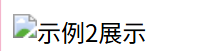

前端页面展示不止需要文字，还需要列表和图片展示。
尝试把下面的代码写进你的html文件的<body>内部
<h1>水果有很多种</h1>
<p>介绍几种</p>
<ul>
<li>苹果</li>
<li>西瓜</li>
<li>草莓</li>
</ul>
<h1>蔬菜有很多种</h1>
<p>介绍几种</p>
<ol>
<li>白菜</li>
<li>南瓜</li>
<li>冬瓜</li>
</ol>
显示效果如下图：

列表类型有多种，nl、ol、li。ul是无序列表，默认显示园点；ol是有序列表，默认显示数字；li则是列表项，表示列表中的一项
这三个都是成对标签，注意内容要包裹在其中，<li>的内容除了文本还可以放块级元素，例如再嵌套列表、图片
你可以试着增加新的列表和列表项体验对列表的修改。
结构为：
<ul>
<li>内容a</li>
<li>内容b</li>
<li>内容c</li>
</ul>
<ol>
<li>内容a</li>
<li>内容b</li>
<li>内容c</li>
</ol>
另外还有定义列表dl、dt、dd，和 ul/ol 结构不同，是"成对"出现的。
例如：
<dl>
<dt>HTML</dt>
<dd>超文本标记语言，负责网页的结构。</dd>
<dd>前端的重要基础。</dd>
<dt>CSS</dt>
<dd>层叠样式表，负责网页的外观。</dd>
<dt>JavaScript</dt>
<dd>编程语言，负责网页的交互。</dd>
</dl>

与ul、ol、li相似，也可以在<dd>里放块状元素。 结构为：
<dl>
<dt>名词1</dt>
<dd>名词1解释1</dd>
<dd>名词1解释2</dd>
<dt>名词2</dt>
<dd>名词2解释</dd>
<dt>名词3</dt>
<dd>名词3解释</dd>
</dl>
相似结构的html在htmlexample2可以找到。
html示例2
我们再学习图片的显示。
图片显示要使用独立标签<img>，例如，为了显示上面的示例图，本篇的html代码中使用了
img src="../imgs/learnimgs/html/html2-1.png" alt="示例2展示" width="800" loading="lazy">
来显示图片。
img是图片，有如下几个属性：
<img>允许的图片格式有很多，有以下几种：
这是一个加载失败的图片的示例：

你可以试着在你的html里写一个<img>来显示你想显示的图片
相似结构的html在htmlexample3可以找到。